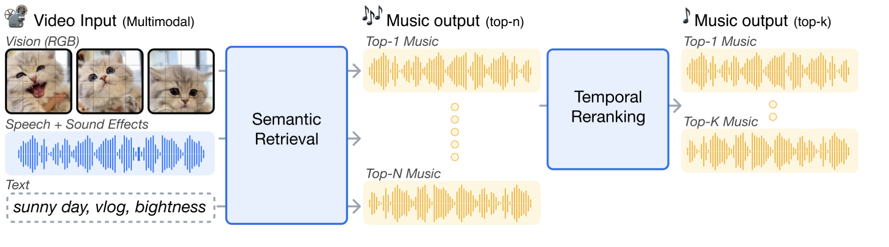
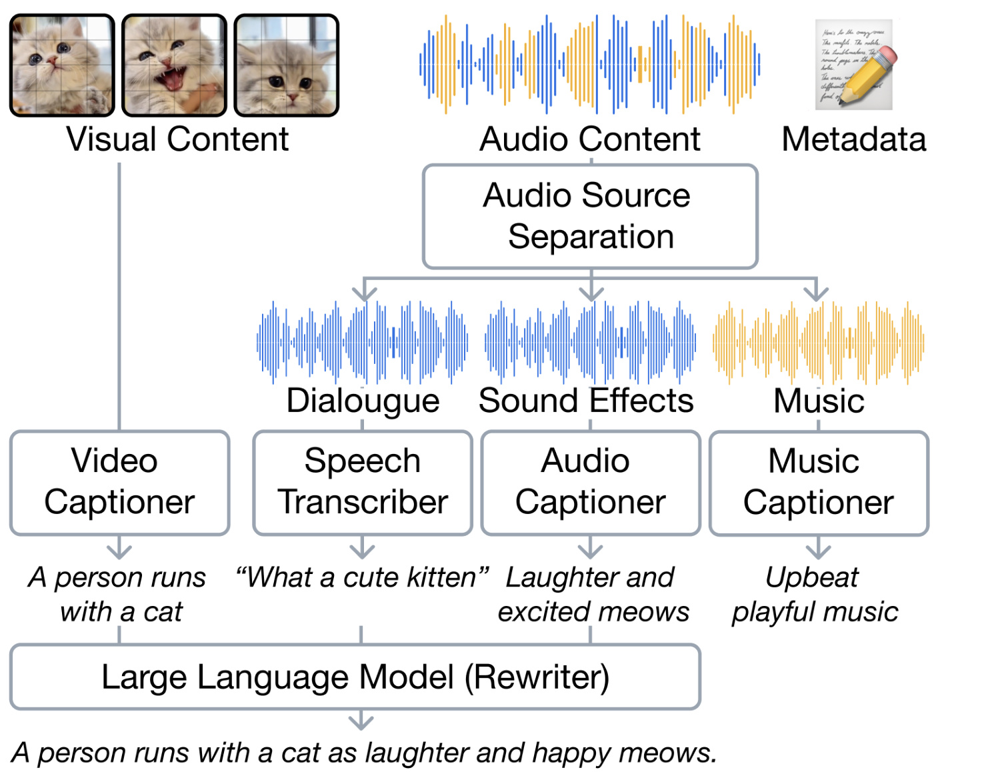
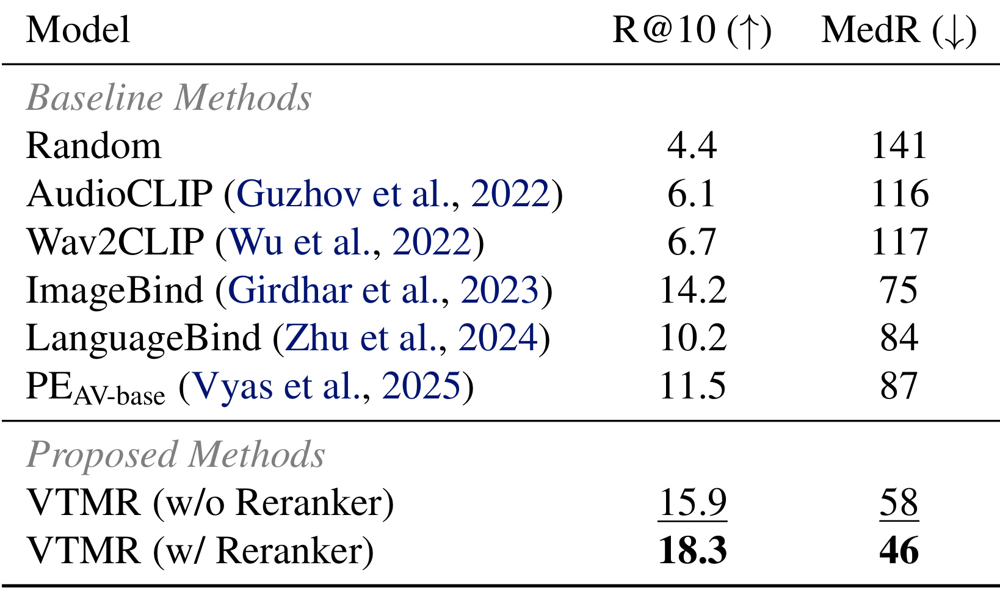
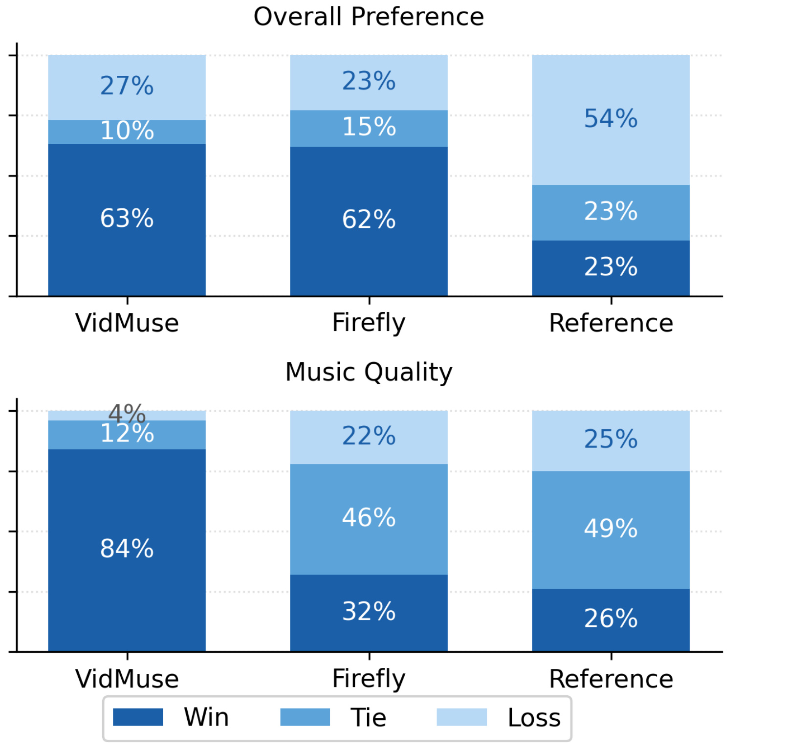

VTMR：先做多模态语义召回，再用时序 Cross-Encoder 重排视频配乐
VTMR 的全名是 Multimodal Video-to-Music Recommendation via Semantic Retrieval and Temporal Reranking，由 Seungheon Doh、Minhee Lee、Sangmoon Lee、Ben Sangbae Chon 与 Juhan Nam 完成，机构为 KAIST Graduate School of Culture Technology 与 Gaudio Lab。论文于 2026 年 7 月 7 日公开，并标注为 ICML 2026 Learning to Listen: Workshop on Machine Learning for Audio 论文。唯一论文入口是 arXiv:2607.05971，作者还提供了可播放案例的官方项目页。本文讨论的是从既有音乐库为视频选曲的跨模态检索与重排，不是端到端音乐生成，也没有报告线上推荐业务指标。
现有视频配乐检索一方面没有充分利用视频与音乐两侧的多模态语义，另一方面又把完整时序压成单个全局向量；它能找到大致情绪或风格相符的音乐，却无法判断局部音乐事件是否与具体视频时刻对齐。
1. 背景和问题
视频与音乐的“匹配”至少包含两个尺度。第一个尺度是全局语义：一段明快的旅行 vlog 通常不该配低沉、缓慢的哀乐，题材、情绪、风格和乐器应该大体相容。第二个尺度是局部时间：画面切换、动作加速、对白停顿或情绪转折发生时，音乐的节拍、强弱、段落或音色变化是否同步。前者适合被压缩成向量并做大库近邻搜索，后者却依赖连续片段之间的细粒度交互。若只优化全局相似度，系统可能找到一首“总体很像”的音乐，却把高潮落在错误时刻；若让重模型直接比较全库每一首音乐的完整序列，计算成本又很难接受。
论文把既有 Video-to-Music 方法的不足拆成两条。其一，多数工作主要把视觉内容投向音乐空间，即使有工作加入文本，也没有系统利用视频画面、视频中的非音乐音频、场景文字描述、音乐音频、音乐描述和视频 metadata。视频中的对白与音效往往直接揭示事件和情绪，音乐 caption 则把旋律、乐器、速度与氛围转成可对齐的语义；忽略这些信号，相当于只凭画面猜配乐。其二，现有检索通常把视频与音乐各压成一个 global embedding，再用内积或余弦相似度排序。单向量的优点是可建立 ANN 索引，缺点是池化后无法知道“第几个视频时刻”应对应“第几个音乐时刻”。这种信息损失不是把 embedding 维度再加大就必然能修复，因为时序位置在池化操作中已经被折叠。
VTMR 因而采用经典但有针对性的 retrieve-and-rerank 分工。Stage 1 用冻结的通用视听感知编码器和文本编码器，把视频侧与音乐侧的多模态全局信息投到同一空间，从全库高效取出 top-N；Stage 2 只对这 N 个候选读取未池化的视听序列与音乐序列，通过 cross-encoder 建模跨模态时间交互，最后输出更小的 top-k。两阶段并不是两个互不相干的模型堆叠：第一阶段负责保证语义候选覆盖，第二阶段补回池化丢失的局部对应。论文最值得检查的也正是两段增益能否被分开归因，而不是只看最终一行最好数字。
这个问题设定还包含一个常被摘要省略的数据难点。公开视频通常只有混合音轨，音乐、对白与环境音叠在一起；视频侧场景描述、音乐属性描述也未必存在。VTMR 不是在一个天然齐全的人工标注多模态表上训练，而是先做音源分离，再用多个视觉、语音、音频和音乐模型产生伪标注，最后由 LLM 汇总。这让模型能扩大训练数据，却把源分离错误、自动转写错误和 caption 偏差一起带入检索空间。方法效果必须和这条预处理链共同理解：所谓“加入文本和非音乐音频”不只增加信息，也增加了自动标注噪声。
从推荐系统角度，VTMR 的目标更接近内容匹配型 candidate generation，而非个性化排序。查询是视频内容，不包含用户历史、创作者偏好或平台反馈；相关性来自视频与原配乐或人工核验配对，而不是点击、跳过、收藏等行为。R@10 与 Median Rank 衡量正确配乐在候选列表中的位置，却不能回答用户是否愿意观看、是否会因版权或重复曝光而疲劳，也没有覆盖新颖性、多样性或商业约束。因此，本文可以支持“多模态语义 + 时序重排改善特定 V2M benchmark”，不能直接支持“已解决短视频平台配乐推荐”。
论文仅有 6 页，并以 workshop 形式公开。它给出了完整两阶段结构、一个离线主结果表和一组专家 A-vs-B 人评，但没有正式报告训练集最终规模、各数据来源占比、统计显著性、推理时延或内存开销，也没有线上试验。对这类短论文，最稳妥的阅读方式不是把有限证据扩写成成熟工业系统，而是明确三件已经展示的事情：多模态 Stage 1 是否超过现有全局 embedding 基线；Stage 2 是否在同一 Stage 1 候选上继续增益；专家对检索音乐的主观判断是否与离线结果方向一致。除此之外的泛化结论都需要更多实验。
2. 方法
2.1 从多模态媒体编码到统一输入
论文先把查询视频写成 \(v=(x^v,x^a,x^t)\)：\(x^v\) 是 RGB 帧，\(x^a\) 是去除背景音乐后保留的对白与音效，\(x^t\) 是 LLM 生成的场景描述；另有 \(x^{meta}\) 表示标题、频道、类别等原始 metadata。音乐 \(m=(x^m,x^{mt})\) 包含音乐音频与自动生成的音乐 caption。这个定义故意让视频与音乐两侧都同时拥有媒体信号和语言信号，Stage 1 才能在共享语义空间内比较“看见/听见/读到的内容”，而不是把视频单方面翻译成音乐标签。PEAV-base 被冻结作为主干：视频帧经 PE-L frame encoder 形成长度为 \(L_v\) 的视觉序列；非音乐音频先由 DAC-VAE 以 25 Hz token 化，再由带 RoPE 的 Transformer 上下文化为长度 \(L_a\) 的序列。两条序列做时间对齐后进入浅层融合 Transformer，取 \([\mathrm{CLS}]\) 得到视频侧全局视听表示；音乐经同一个 PEAV audio encoder 得到时序序列与 \([\mathrm{CLS}]\) 全局表示。核心编码关系为：
符号解释：\(e^v\in\mathbb{R}^{L_v\times C}\)、\(e^a\in\mathbb{R}^{L_a\times C}\) 和 \(e^m\in\mathbb{R}^{L_m\times C}\) 都保留时间位置，\(C\) 是主干通道维度；\(h^{av}\in\mathbb{R}^{C}\) 是池化后的全局视频向量，音乐的 \([\mathrm{CLS}]\) 记为 \(h^m\)。这里最关键的接口是同时保留全局 \(h\) 与时序 \(e\)：前者服务大库召回，后者只在小候选集里交给重排器。 若只保留 \(h\)，Stage 2 无法恢复被池化掉的顺序；若全库都传 \(e\)，则失去第一阶段的检索效率。
文本部分使用 PEAV 的 ModernBERT 编码器。视频场景描述、音乐 caption 和 metadata 分别形成 \(h^t\)、\(h^{mt}\)、\(h^{meta}\)。论文没有让文本 token 序列进入 Stage 2；文本主要帮助 Stage 1 的全局语义覆盖，Stage 2 依赖的是视听序列与音乐音频序列。这一选择控制了重排长度，也意味着文字里描述到、但视听 token 没能体现的叙事关系不会被时序 cross-encoder 直接利用。

Figure 1 清楚画出职责交接。左侧查询同时包含 RGB、对白与音效、文本，Stage 1 把它们压到可索引的全局空间并返回 top-N 音乐；右侧 Stage 2 不再面对全库，而是逐候选比较视频与音乐的时序表示，再压到 top-k。图中的 top-1 波形只是排序示意，不表示训练只使用一个正候选。更重要的是，Stage 2 不能补救 Stage 1 完全漏掉的音乐：正确曲目不在 top-N 内，cross-encoder 就没有机会评分。因此最终 R@10 同时受召回覆盖与重排准确性约束，而 reranker 的计算量近似随 N 增长。实验明确使用 N=40，这个数值是效果和成本之间的固定工作点，不是论文证明的全局最优。图中从单个全局相似度到联合时序比较的转换，也解释了为何同一候选在两阶段可能改变名次：Stage 1 只看到整体情绪与风格，Stage 2 才能利用局部速度、能量与事件对应。
2.2 语义召回：投影、模态融合与多对对比学习
五类全局表示不能直接比较，因为视听、音乐和文本主干的分布不同。作者为视频、音乐和文本分别设置 \(f_v\)、\(f_m\)、\(f_t\)，每个投影头由 LayerNorm、无偏置三层 MLP 与中间 GELU 组成，把表示映射到 \(d=1024\) 的共享空间：
符号解释：\(z^v\) 和 \(z^m\) 分别是视频视听与音乐音频投影，\(z^{vt}\)、\(z^{mt}\) 是视频与音乐文字描述投影，\(z^{meta}\) 是视频 metadata 投影；所有向量都在同一 1024 维空间。投影头承担“把冻结主干输出校准为本任务相似度”的职责。论文没有解冻 PEAV-base，因此 Stage 1 的可学习容量主要集中在这些头和后续的融合/损失上，这也降低了训练成本，但限制了主干对 V2M 特定时序或审美信号的适配。
训练时，系统以 0.5 概率把平行的媒体与文本向量做平均：
符号解释：左式把视频视听与场景文本融合，右式把音乐音频与音乐 caption 融合；另外 0.5 概率的批次完全丢弃文本流，只依赖 \(z^v\) 与 \(z^m\)。这种 modality dropout 让线上缺少 caption 时仍可查询，也防止模型把相关性全部走文本捷径。它不是对每个模态学习可解释权重，而是简单平均与整流丢弃；若自动 caption 严重错误，平均可能把噪声直接写进查询向量，论文没有提供门控或置信度校准机制。
五种投影表示共有 \(\binom{5}{2}=10\) 个两两组合，作者用基于 SigLIP 的 multi-pair contrastive framework 计算 pairwise sigmoid log-likelihood。论文正文没有把该项单独排成编号公式；依照标准 SigLIP 形式，可把第 \(i,j\) 个模态组合的目标写成：
符号解释：\(a,b\) 是 batch 内样本索引，\(y_{ab}\in\{+1,-1\}\) 指示二者是否为同一视频-音乐关联下的正配对，\(\tau\) 与 \(\beta\) 是 SigLIP 相似度的尺度和偏置，\(z^{(i)}\)、\(z^{(j)}\) 来自五类表示中的一对。这里的公式是对论文“十种组合使用 SigLIP pairwise sigmoid log-likelihood”这段文字的标准形式化，不是论文给出的独立编号式。其直觉是每对模态都直接判断配对真假，不需要 CLIP 式全 batch softmax 的统一归一化；十个目标共同迫使视听、音乐、两侧文字和 metadata 在同一几何空间中相互可检索。代价是组合中可能存在语义强弱差异，论文没有披露十项是否等权，也没有单独消融某个组合。
推理时，视频 query 取视听与文本 embedding 的平均，音乐向量取音频与文本 embedding 的平均，再以全局相似度取 top 40。metadata 在训练的多模态对齐中出现，但实验协议对最终 query 的文字表述主要强调 audiovisual 与 text 的平均；因此不能把所有五个 \(z\) 简化成一个固定五路平均。Stage 1 的优势来自更完整的多模态训练与融合，而不是仅更换一个 ANN 算法。
2.3 时序重排：候选内 Cross-Encoder 与混合排序目标
Stage 2 从 PEAV-base 取视频视听帧序列和音乐声学序列。由于不同视频、歌曲时长不一，两条序列都沿时间轴重采样到 \(T_{\mathrm{target}}=64\)：长序列用窗口平均下采样，短序列用线性插值上采样。随后各自线性投影到 \(d_j\) 维，加入可学习的模态类型向量，拼成一条联合序列：
符号解释：\(e^{av},e^m\in\mathbb{R}^{64\times d_j}\) 是重采样并投影后的视频视听与音乐序列，\(t^{av}\)、\(t^m\) 区分模态，\(Tr\) 是 4 层、8 头 Transformer encoder，最后的两层 GELU MLP 把上下文化 \([\mathrm{CLS}]\) 变成候选标量 \(s(v,m)\)。因为视频与音乐 token 被放进同一 self-attention 序列，每个视频时刻可以直接关注任意音乐时刻；这才是 cross-encoder 相对双塔全局内积的表达力来源。它没有显式强制单调时间对齐，也不输出可解释 alignment path，因此“捕捉时序对应”指由注意力和排序监督隐式学习，而非动态时间规整式硬约束。固定 64 点让计算长度可控，却会改变不同原始时长的时间分辨率：两分钟视频的一个 token 覆盖时间明显长于十几秒片段，线性插值也可能制造原序列不存在的平滑状态。论文没有比较 32、64、128 等长度或短/长视频分桶效果，所以 64 是实现选择，不是已验证的最佳粒度。
训练样本由配对音乐 \(m^+\) 与负音乐 \(m^-\) 构成，负样本来自 batch 内其他音乐，并依据 Stage 1 语义召回分数采样。也就是说，reranker 面对的不是随机易负样本，而是语义上已经比较接近的候选。其损失把点式二分类与 margin ranking 相加：
符号解释：\(s^+=s(v,m^+)\)、\(s^-=s(v,m^-)\)；前两项 BCE 要求正样本绝对分高、负样本绝对分低，第三项要求二者至少拉开 \(\gamma=0.2\)。BCE 提供概率方向，margin 项直接约束同查询下顺序。若负样本其实也是合理配乐，目标会把多解任务强制变成单一正例排序；如果 Stage 1 产生的负样本过易，margin 很快饱和，时序模块学不到细粒度差别。论文没有报告多正例训练、hard-negative 温度或 loss 权重消融。
两阶段在训练上并非端到端联合优化。 论文结论把端到端训练 retrieve-and-rerank pipeline 列为未来工作。这意味着 Stage 2 的误差不会反向修正 Stage 1 的表示与 top-N 边界，Stage 1 也不知道哪些语义近邻最能给时序模块提供有效难例。当前设计的优点是可分别训练、分别部署，风险则是候选漏召回无法被后级修复。它与工业级 cascade 很相似，只是两级分别针对“多模态全局语义”和“未池化时间交互”做了更清晰的功能划分。
3. 实验结果
3.1 数据构造、评测协议与比较对象
训练数据来自三类来源：公开的 MMTRAIL-2M YouTube 视频、包含约 16K 专业电影预告片的 MovieLens-Content，以及内部广播内容。作者要求原视频保留真实混合音频，背景音乐至少覆盖视频时长的 50%，并覆盖专业制作与用户生成等不同场景。过滤阶段先用音乐检测模型去掉 music logit 不高于 0.7 的片段，再排除超过 2 分钟的视频，最后用音乐审美模型去掉 content enjoyment score 低于 5.5 的音乐。阈值同时提高音乐显著性与质量，却也会把弱背景音乐、长叙事视频和审美模型不偏好的曲目排除在训练分布之外。
混合音频通过 Gaudio 的 source separation 拆成对白、音效和音乐；Qwen3-VL-2B-Instruct 生成视觉描述，Qwen3-ASR-1.7B 转写对白，AudioFlamingo-3 描述环境声，MusicFlamingo 描述音乐属性，最后 Qwen3-4B-Instruct 把视觉、对白与音效描述重写成统一视听文本。整个链路没有人工逐条校正说明。它扩大了可训练数据，但若分离模型把音乐残留到音效、ASR 漏掉关键词，或 rewriter 把不确定内容写成肯定句，错误会同时进入媒体与文本对齐。

Figure 2 显示多模态输入并不是一张静态特征表。视觉直接送给 Video Captioner；混合音频先分出 Dialogue、Sound Effects、Music，再分别经过语音、音频与音乐描述模型；最终 LLM 把视觉、对白和音效文本重写为视频侧语义。图中音乐 caption 独立保留给音乐侧。该流程让 Stage 1 能对齐“画面里小猫奔跑、对白夸赞、兴奋叫声”与“欢快音乐”等语义，但自动描述的共同语言空间也可能制造虚假的表面一致。论文没有给出 caption 质量、人审比例或去噪消融，因此无法判断最终增益有多少来自真实媒体补充，有多少来自强语言模型的语义先验。
离线测试使用人工核验的 VidMuse benchmark。作者重新抓取数据以补齐预处理所需的多模态信号；推理时视频 query 是视听和文本向量平均，音乐向量是音频与文本向量平均，reranker 处理 Stage 1 的 top 40。指标是 Recall@10 与 Median Rank：R@10 统计正确音乐进入前十的查询比例，越高越好；MedR 是正确音乐名次的中位数，越低越好。R@10 更关注头部是否命中，MedR 反映整体名次位置，二者一起可以避免只看少数头部改善。
比较对象包含 AudioCLIP、Wav2CLIP、ImageBind、LanguageBind 与同主干的 PEAV-base，也列出 Random。这里 ImageBind 在两项主指标上是最强基线：R@10 为 14.2、MedR 为 75；PEAV-base 只有 11.5 与 87。VTMR 的比较既包含“换成更丰富的 Stage 1 多模态对齐是否有效”，也包含“在同一个 VTMR Stage 1 后加入 Stage 2 是否有效”。但论文没有报告统一重新训练各基线的细节、候选库规模、置信区间或显著性检验，这些都是复现实验时要补齐的口径。
3.2 离线主结果：两阶段增益必须分开归因

Table 1 的正确读法是三段条件，而不是把最终值与 Random 之间的差全部归给 VTMR 某一个模块。第一段，最强现有基线 ImageBind 为 R@10=14.2、MedR=75。第二段，VTMR（w/o Reranker）只使用 Stage 1 多模态语义召回，达到 R@10=15.9、MedR=58。因此 14.2→15.9 与 75→58 是多模态语义召回相对 ImageBind 的差异，它混合了主干/投影、多模态信号、文本融合与多对 SigLIP 训练的整体贡献，不能单独归因于某一种模态。第三段，VTMR（w/ Reranker）在同一召回链上加入 Stage 2，达到 R@10=18.3、MedR=46。因此 15.9→18.3 与 58→46 才是时序 reranker 的直接阶段增量。
若换成相对变化，Stage 1 的 R@10 相对 ImageBind 提高约 12.0%，MedR 降低约 22.7%；Stage 2 相对 Stage 1 再把 R@10 提高约 15.1%，MedR 降低约 20.7%。相对百分比便于观察量级，但原表以百分点和名次为正式口径：R@10 最终比 14.2 高 4.1 个百分点，MedR 从 75 降到 46。由于没有方差和多次运行，不能用这些点估计断言统计显著；由于 reranker 只看 top 40，也不能证明它在更大或更小 N 下保持相同比例收益。
这两行 proposed methods 是论文唯一明确的组件级阶段对照，可以把它理解为有限消融：w/o 与 w/ Reranker 的差隔离了 Stage 2 是否存在。然而，它不是完整 ablation suite。论文没有分别移除视觉、非音乐音频、视频描述、音乐 caption 或 metadata；没有比较五种表示的十个 SigLIP 组合；没有关闭 0.5 modality dropout；没有拆开 BCE 与 margin ranking；也没有测试 \(T_{mathrm{target}}\)、top-N、Transformer 层数和 head 数。因而 Table 1 支持“两阶段整体有效”，不支持“某个具体编码器、loss 项或阈值是提升来源”。
指标本身也要限定。单个“正确音乐”可能只是原视频配乐或人工认可配对，但真实配乐通常是多解问题：多首音乐都可能合理。R@10 把未标注但合适的音乐视作非目标，MedR 也只追踪标注目标名次。Stage 2 使用未池化序列后改善这些指标，说明它更善于把标注配对排前；这与发现同风格替代曲、避免版权冲突或满足个体审美仍是不同目标。论文没有报告多样性、覆盖率或候选重复度。
此外，效率证据缺失会影响“可部署”判断。Stage 1 的共享向量适合 ANN，但 Stage 2 为每个查询构造 40 个长度约 130（CLS、64 视频、SEP、64 音乐）的联合序列并运行四层 Transformer。其成本远低于对 500K 音乐全量 cross-encode，却未给出单查询时延、吞吐、显存或缓存策略。结果证明效果增益，不等于已证明线上性价比；工程上还需要 N 的 recall-latency 曲线和并行批处理测量。
3.3 人评证据与论文没有回答的问题
人评使用 20 个视频，其中 10 个是由音乐导演配原始音乐的专业广播片段，另 10 个是不含背景音乐的 YouTube 视频。VTMR 从外部 500K 专业制作音乐库检索候选，与三种对象分别做 A-vs-B：人工参考配乐被视为上界，Adobe Firefly 是商业基线，VidMuse 是生成式基线。共有 30 名学术音乐研究者与音频行业专业人士，在 Overall Preference 和 Music Quality 两个维度提供 1,200 条成对偏好标注。这里的 1,200 是 annotation 数，不是 1,200 个独立视频。

Figure 3 每一根柱都以 VTMR 为一侧，深蓝/中蓝/浅蓝分别表示 VTMR 的 Win/Tie/Loss，不能把不同柱当作三个对手自己的绝对分。Overall Preference 上，VTMR 对 VidMuse 为 63% 胜、10% 平、27% 负，win+tie=73%；对 Firefly 为 62% 胜、15% 平、23% 负，win+tie=77%；对人工参考为 23% 胜、23% 平、54% 负，win+tie=46%。因此“与商业基线相当”更准确地说是：这组 20 视频的成对评测中，VTMR 对 Firefly 的非负偏好比例较高；由于论文没有显著性检验和评审者一致性，不能把 77% 写成统计意义上的产品等价。相对人工参考 54% loss 也提醒我们，专业定制配乐仍是明显上界。
Music Quality 上，VTMR 对 VidMuse 为 84% 胜、12% 平、4% 负，win+tie=96%；对 Firefly 为 32% 胜、46% 平、22% 负，win+tie=78%；对人工参考为 26% 胜、49% 平、25% 负，win+tie=75%。论文据此强调检索式系统从专业曲库取音乐，可以避免端到端生成的音质退化。这个解释在 VidMuse 对比上有直接支持，但它同时混合了“检索算法能力”和“候选库已有母带质量”：如果库中音乐本来由专业制作，音质优势并不完全来自 VTMR 的匹配模型。Music Quality 也不是视频-音乐适配度，不能替代 Overall Preference。
离线与人评必须分开。R@10/MedR 在 VidMuse benchmark 上测试已知配对排名；人评则在 20 个视频上比较听感与总体偏好，并且 VTMR 从 500K 外部专业曲库检索。两套实验的候选来源、样本规模和目标不同，不能用人评的 77% 去解释离线 R@10=18.3，也不能用离线提升证明商业产品体验已经提升。二者只能形成互补证据：离线表明两阶段对标注配对排名有效，人评表明在小规模专家比较里检索结果没有表现为“指标高但听感明显差”。
人评还缺少若干关键信息：20 个视频如何抽样、每个 pair 是否随机左右顺序、评审者是否听到完整视频、同一人标注多少项目、是否计算一致性、是否控制对音乐来源的熟悉度。没有这些信息，1,200 条标注不等于 1,200 个独立观测；同一视频和同一评审者会产生相关性。论文也没有对不同题材、时长、音乐类型分桶，无法判断时序重排是否只在节奏明显的片段更有效。
最后，项目页 demo 对理解模型输出很有帮助，但 demo 是精选案例而非统计样本。它能让读者听到输入视频、候选音乐及两阶段结果，不能替代随机样本错误分析。论文没有展示失败案例、attention 对齐图或“Stage 1 正确而 Stage 2 排错”的反例，也没有告诉我们 caption 误导、源分离失败或时序重采样损伤分别占多少。后续评估若要验证模型真正利用 temporal correspondence，应加入时间打乱、音乐片段平移、只保留全局统计等反事实测试，而不只比较完整模型两行数字。
4. 总结
VTMR 的主要贡献是把 V2M 的两个尺度放进一条可计算的级联：多模态全局 embedding 负责从大音乐库找到语义相容候选，未池化视听与音乐序列的 cross-encoder 负责候选内时间交互。冻结 PEAV-base、1024 维共享投影、0.5 概率的文字融合/丢弃、五类表示的十个 SigLIP 组合构成 Stage 1；固定 64 时序位置、四层八头 Transformer、BCE 加 margin ranking 构成 Stage 2。结构并不追求端到端全库精排，而是在召回效率与细粒度表达之间做清晰分工。
最可靠的定量结论需要保持阶段条件：ImageBind 的 R@10=14.2、MedR=75；只用 VTMR 多模态 Stage 1 后为 15.9、58；再加时序 Stage 2 后为 18.3、46。前一跳属于语义召回整体差异，后一跳才是 reranker 增量。人评则提供另一类证据：VTMR 对 Firefly 的 Overall Preference win+tie 为 77%，对 VidMuse 的 Music Quality win+tie 为 96%，但对人工参考的 Overall Preference 只有 46% win+tie。它说明专业曲库检索在音质上具备优势，也说明人工定制配乐仍没有被替代。
论文的不足同样具体。训练集最终规模与组成未披露；没有模态、loss、候选数和时序长度消融；没有时延、吞吐和显存；没有置信区间与显著性；人评只有 20 个视频且缺少一致性细节；数据依赖内部广播内容、商业源分离与 500K 专业音乐库。Stage 1 与 Stage 2 尚未端到端训练，正确音乐一旦漏出 top 40，后级无法修复。上述缺口不否定结果，但决定了它当前更像一个结构合理、初步证据积极的 workshop 原型，而不是已经完备验证的生产方案。
后续最有价值的验证不是继续堆更复杂的编码器，而是隔离贡献来源。第一，逐一移除视频音频、视频文本、音乐 caption 与 metadata，确认多模态增益来自哪一侧；第二，对音乐或视频做时间打乱/平移，检验 cross-encoder 是否真的依赖局部顺序；第三，报告 top-N 与 \(T_{mathrm{target}}\) 的效果—时延曲线；第四，在多首合理配乐标注与真实用户行为上评估，不把单一原配乐当作唯一答案；第五，公开随机失败案例与伪标注质量。完成这些实验后，才有条件判断 VTMR 的两阶段思想能否稳定推广到不同视频域、音乐库和在线服务约束。